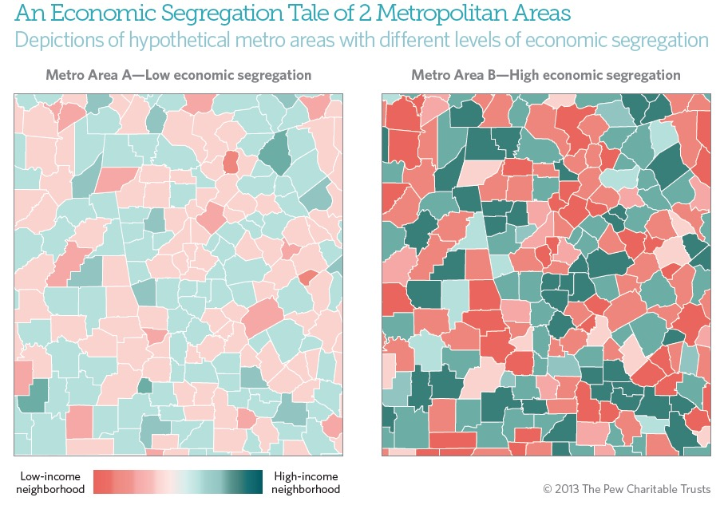

Origins of Income Segregation
Differences in wealth can be regarded dating back many centuries ago. Questions concerning the likelihood of social mobility within a certain class appears as early as the Neolithic era across many regions in Eurasia. 1 Scholars attribute factors such as greater access to food and resources, the development of warrior-elite classes, and spatial dispersion as contributing to development of wealth inequality. Measured by comparison of housing plots and layouts, those abundant in wealth were more likely to live non-nomadic lives. In contrast, those who were not part of the elite were likely to be sharecroppers and nomads and lived in shared areas. Kohler 1 suggest that areas with high wealth inequality, maintained a structure of highly decorative imperial palaces, surrounded by nobles, warriors, and then commonfolk lived concentrated on the outskirts.
Typically, during periods of the residential concentration of the rich inside castle-like domains, those outside the walls of the empire were thought to be paupers and watched the rich live their luxurious lives from the outside. As early as the Mayan civilization, it has been documented that the elites lived in the center of the city, close to the resources, while commoners were located around them. Much has evolved since then, and we see similar patterns in contemporary residential pattern. 1
Akin to prehistoric periods, human nature saw no changes in people's preferences in spatial dispersion. Studies find that in societies with higher rates of inequality, you will find unequal distributions in wealth, which attributes to dissimilar residential patterns. With the United States being the most economically developed country with the highest levels of inequality, let's look more specifically as some of its residential effects.
Income Segregation in the United States
Some states are more unequal then others and bring with them dwindling chances of social mobility. Wealth is dispersed unevenly across the coast, leaving high concentrations of poverty in the southern United States. While the differences in wealth between regions in the US is likely a result of economic sanctions, it nevertheless influences the opportunities and resources that may be available to those that reside in low-income areas.
Income Segregation in New York City
New York City has the highest number of homeless residents and billionaires in the United States, making it one of the most economically unequal cities across the nation. 2 What makes New York City so special is its close proximity of wealth and poverty all located within mere cite blocks of one another. And with New York real estate values rising at a much higher rate than the average income, many people are seeing a decline in affordable housing. The impacts of gentrification have forced many low-income New Yorkers out of their homes and replaced them with a new elite class of citizens; contributing to concentration of poverty in certain areas of New York and deepening the divide between the rich and the poor.
Income Segregation and Neighborhoods
Proximal location to opportunities is a fundamental condition of neighborhood inequality. Consider the social connections that people make in areas that they reside. By continuously being exposed to members of the same social class through networked interaction, people may be limiting the possibility of exposure to opportunities for social mobility. In neighborhoods that house traditionally low-income residents, the community district is limited to resources that serve their residents. This is due to inequality of public resources because more money is distributed to facilities that serve higher income individuals. Research illustrates that many of the obstacles that relate to economic mobility in urban areas are exacerbated by the divisions that takes place from neighborhood segregation.
References
- Washington State University. (2017, November 15). Rising inequality charted across millennia: Findings have profound implications for contemporary society. ScienceDaily. Retrieved May 1, 2018 from www.sciencedaily.com/releases/2017/11/171115130853.htm
- Markee, P. (2012). State of the Homeless 2017. Coalition for the Homeless.
- Sharkey, P., & Graham, B. (2013). Mobility and the metropolis: How communities factor into economic mobility. The Pew Charitable Trusts, 1-23.